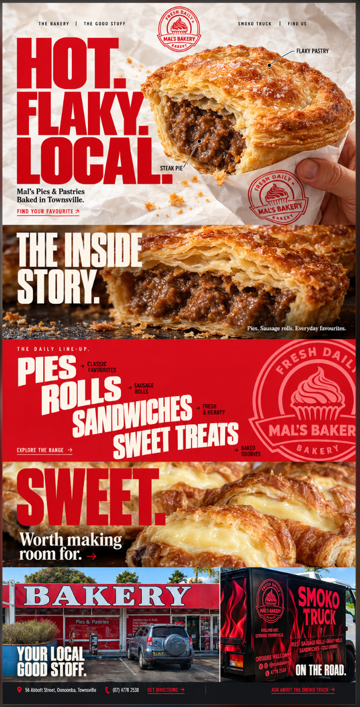

Direção selecionada
Hot.
Flaky.
Local.
Uma pie em primeiro plano, letras que ocupam a cena e fotografias que conectam o site. Esta entrega mantém a composição escolhida, com textos editáveis e movimento em camadas.
A imagem ao lado é o estudo visual selecionado, enviado pelo cliente. Não é uma captura do site implementado. O serviço de prévia interativa estava indisponível; a inspeção de navegador permanece pendente.

Cinco cenas. Uma direção.
| Cena | Preservar | Origem visual |
|---|---|---|
| 01 · Hero | Logo central, HOT/FLAKY/LOCAL à esquerda, pie e mão à direita | Papel e recorte de campanha, textos em HTML |
| 02 · Inside story | Detalhe da massa e recheio com título branco | Macro fotográfico de campanha |
| 03 · Line-up | Único fundo sólido, vermelho; menu em diagonal e selo cortado | Tipografia e logo PNG transparente |
| 04 · Sweet | Doces com custard, título vermelho e frase branca | Foto original fornecida |
| 05 · Visit | Fachada e caminhão reais; contato no mesmo fechamento | Fotos originais fornecidas, enquadradas no site |
Movimento de câmera
Abertura por detalhe, revelação do hero e aproximação para voltar à massa. O produto, a fotografia de papel e as letras são camadas independentes. O site implementa a abertura e o scroll em CSS/JS; o vídeo abaixo é uma montagem separada para apresentar o movimento.
Prévia 1920 × 1080, 24 fps, sem áudio. Composição 2.5D de imagens estáticas. Não é filmagem real da padaria, simulação 3D da pie ou gravação de um teste em navegador.
Entrada · 1,8 s
O macro se afasta, a pie entra de forma curta e as três linhas se assentam. Nenhuma tela bloqueia a navegação.
Rolagem
O recorte aproxima até 23%. Uma janela circular com dissolve liga o recheio à foto de detalhe. O movimento das demais fotos é discreto.
Controle
Pause motion e movimento reduzido do sistema mostram a composição estática. Economia de dados também desliga os movimentos.
Roteiro editável
Consulte o roteiro completo e animation/timeline.json. O vídeo não integra a carga da página pública.
Transparência da logo
O mesmo PNG aparece abaixo sobre três fundos. O desenho vermelho mantém o selo existente da marca. Os espaços internos deixam o fundo aparecer; não há placa preta ou branca.
Xadrez de verificação
Branco quente
Preto
Arquivo: brand/Logo-Mals-Bakery-Transparente.png · 1254 × 1254 · RGBA. O xadrez pertence a este guia; não está gravado no PNG. Trata-se de recriação raster da marca, sem promessa de SVG vetorial.
O kit na prática
Editar
Estrutura e links em site/index.html; lista de produtos em site/content.js; visual em site/styles.css; movimento em site/app.js. Fontes e imagens estão no pacote.
Imagens
As três fotos reais usadas na página conservam seus bytes de origem. Os três masters de campanha e seus prompts também acompanham o kit. Ver orientação de imagens ↗
Publicar
Enviar o conteúdo de site/ para hospedagem estática. Nenhum build ou serviço pago é necessário para navegar. O site ainda não foi publicado.
Revisar
Antes da publicação, conferir os enquadramentos, contraste, teclado, diálogos e links no desktop e celular. A indisponibilidade da prévia impediu a revisão visual em navegador neste ambiente. Ver roteiro de revisão ↗